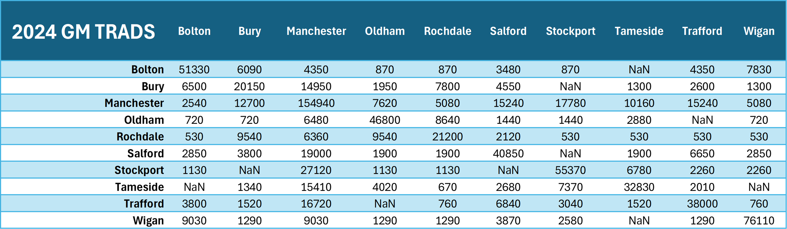
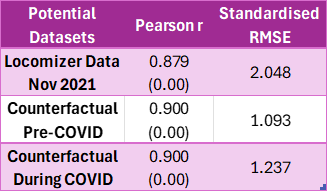
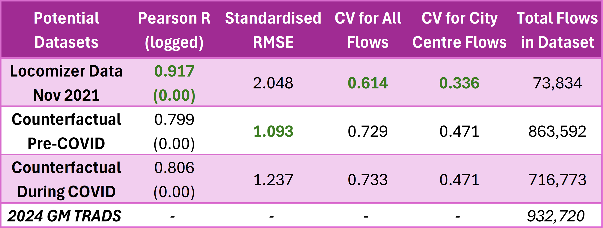

As I staked my claim to bring in OD matrix data as my primary contribution to this research, the next immediate step is to then source for the
appropriate OD data. One of the most common providers of OD data is public transport operators, such as Transport for London (TfL), which uses
tap-in-tap-out data to show where people start and end their journeys.
Public transport-derived OD matrices however is not necessarily the best tool for my specific case because it is data about flows between public
transport stops for all kinds of purposes. My research is more on improving accessibility to city centres for WORK purposes, thus what I need is data
about how many people travel from home to work using public transport. The best option in normal situations should have been Census data, where respondents
declare where they live and where they work and the Office for National Statistics (ONS) do their statistical processing magic to produce a table
aggregated by geographical units (regions, local authorities, MSOAs, etc) -- this is also known as Travel To Work (TTW) data. The Census also collects
information on the mode of transport used to travel to work!
As of date, I only have full access to the ONS counterfactuals and Locomizer data. I have not had access to the Huq OD dataset yet. I won't do a full
statistical evaluation of the datasets, I just need to do a sanity check and see if any of them CAN be used for my dissertation. Also as of date, the
only authoritative data that I trust which provides OD data post-COVID is the
Greater Manchester Travel Diary Surveys (TRADS), which they have been doing annually since 2022.
Latest data is for 2024 (I am going to assume that 2025 outcomes would only be published in late 2026, after my dissertation is due). So the idea is to
compare the ONS counterfactuals and Locomizer data with 2024 TRADS data, essentially somewhat 'validating' it with actual data for one city region. I
would have loved to at least validate it with one more city region (Greater London) but TfL does not release OD data from borough-to-borough like
Greater Manchester.
This is where I asked Claude to suggest me two to three ways to compare the potential OD datasets with the 'gold standard' (2024 GM TRADS). Claude
suggested me the following:
This is NOT exactly the same as using R-squared and RMSE values to evaluate a fitted model from the observed values because I have not fitted any model
yet - I am choosing which dataset for my baseline to begin with. Therefore, I would not care much about variance of potential datasets from 2024 TRADS,
I am more interested in whether the potential datasets highlight the same Origin-Destination pair/s as having the same degree of high flows as 2024
TRADS -> using R value instead of R-squared. Additionally, I am not comparing a fitted model that came from the exact base data as the observed, it is
between two differently-generated datasets, thus I need to standardise the RMSE.

The 'gold standard' of flows between across Local Authorities in Greater Manchester based on 2024 TRADS
Right off the bat, we see that Potential #1 is the worst because after transformation (expanding the data to cover England's population, and then
dividing by 30 days), the flow values are like 10 times less than the 'gold standard' or the other two potential datasets...

Overall, the best OD dataset at my disposal as of now is to use
Potential Dataset #2: The ONS Counterfactual 2021 TTW Data assuming pre-COVID travel patterns. Having relatively high R values for all
three potential datasets mean that all of them largely correspond with 2024 GM TRADS in identifying similar Origin-Destination LA pair/s as having a lot
of flows. What matters more here is that the Standardised RMSE values for all of them are also quite high.
For example, focusing on Potential Dataset #2 and comparing it with 2024 GM TRADS, both are correct in identifying that intra-district LA flows within
Manchester make up the highest number of flows that originated from Manchester LA (154,940 in 2024 GM TRADS, 77,832 in Potential Dataset #2). However,
the former value is almost double of the latter. That is an extreme case of value divergence, since the mean size of an OD pair flow in 2024 GM TRADS
is about 10,000 (meaning that individual OD pair flows in Potential Dataset #2 is off from the corresponding value in 2024 GM TRADS by about 10,000 on
either side on average). Nevertheless, I am compelled to settle on the Potential Dataset #2 for now because the SRMSE values for the other two potential
datasets are higher. It is important to note that having access to more granular benchmark data (at MSOA level instead of LA level) is almost guaranteed
to produce very different results. It could be better because the aggregation may have introduced compounding errors, but it can also be much worse.
Having access to benchmark data for other English regions could also produce different statistical results.
This limits what I can do for my lines of enquiry in the sense that I cannot consciously report on the current situation or outcomes from potential
improvements in raw numbers alone because they are likely wildly off. However, the high R value statistic for Potential Dataset #2 means that there is
confidence in highlighting which areas of the city could be genuinely underserved because it is a high-demand place that falls within the accessibility
gap or beyond the 30/45-minutes scheduled journeys, and I can still report on improvements from various scenarios by percentages.
Choosing Potential Dataset #2 also means that the administrative boundaries for my dissertation will be based on 2011 MSOA boundaries
instead of the more recent 2021 boundaries. This is not expected to complicate my lines of enquiry and not change the material issue underpinned by my
research question since I am NOT primarily using working population totals for any of the numbers that I am reporting.
I got it wrong back on June 1. Specifically I got two things wrong.
Firstly, on that Pearson R values. The reason why it is all relatively high because it did detect the same high-flow OD pairs between 2024 GM TRADS and
all three potential datasets, and those are mostly the flows into Manchester district, where the city centre for Manchester is located. But those flows
are way too high, it dominated everything else and painted a flattering picture. I should have log-transformed the flows so that I can
evaluate the entirety of the datasets, including the smaller flows between the districts, and see if they are in agreement with what was observed in
Greater Manchester in 2024. The rule of thumb is still the same - the higher the R value, the more agreement there is between the datasets, and
therefore the better!
Secondly, the SRMSE values are slightly misleading. Yes, it indicates how far off from 2024 GM TRADS are the flows in the potential datasets.
However, by itself, it does not indicate the pattern of the errors - could the errors be uniform throughout (dataset A flows are all 10,000 off from
2024 GM TRADS flows), or could the errors happen all over the place? To do this, I should have calculated the ratio of potential dataset/GM 2024 TRADS
for each LA-LA flow and then find out the coefficient of variation of those ratios. In summary,
coefficient of variation (CV)
describes the dispersion of a variable in a way that is independent of the variable's unit. In my context, the CV will tell me if differences between
potential datasets and the 'gold standard' are largely consistent across all LA-LA flows or if they are wildly different. The rule of thumb is similar
to SRMSE - the lower the CV value, the more consistent the errors, and therefore the better!
How did I discover these errors? It was through a conversation with Claude, where I was asking about the implications of reporting
percentage changes across scenarios instead of raw numbers after doing SIM. Specifically, I was asking if it is possible to feed into the SIM the shares
of travel to city centre instead of the raw counts, and that was when Claude highlighted that it is only possible if the errors in the selected dataset
are consistent across the board. That led to the realisation that I DID NOT KNOW if this was the case, thus I asked what should be done, and therefore
the suggestion to calculate the CV. When I asked further if there was anything that I missed out in my evaluation such as Spearman's rank correlation,
that was when Claude replied that Spearman's is not necessary and I only needed to do Pearson's Correlation Coefficient on logged flows instead of on
the raw flows.

So the above table is the updated comparison table after adding the two additional statistics. The best dataset for me to use turned out to be
Potential Dataset #1: Locomizer Mobile Phone OD Data from November 2021. The R value on logged flows, while they are high for all three,
is the highest for Locomizer data. Meanwhile, both ONS counterfactuals actually saw their R values dropped when the flows are logged. That meant that
Locomizer data is in greater agreement with actual sampled post-pandemic travel patterns across Greater Manchester than the ONS counterfactuals.
The CV values also show that the Locomizer dataset is a much better fit than the other two. This is because for all flows, Locomizer's errors are
slightly more consistent than the other two datasets. The statistic is even better when we consider the CV for errors in flows to Manchester district,
where the city centre is - Locomizer data has a CV of 0.3 while ONS counterfactuals' CVs are almost 0.5. Putting this information with the SRMSE values
together paints the following picture - Locomizer dataset is very much wrong in terms of actual numbers (very high SRMSE) but as a whole it does capture
the post-pandemic travel patterns in Greater Manchester more effectively with those fewer counts than the ONS counterfactuals (lower R and CV values)!
This could be attributed to the fact that at the end of the day, Locomizer data is actual observed data from a point in time where society is
functioning closer to 2024 (the period of reduced restrictions in Nov 2021) while the ONS counterfactuals are estimates from past periods (pre-pandemic
or mid-pandemic itself).
The implication actually slightly works in my favour - Locomizer dataset is presented using the current 2021 MSOA boundaries, so that means my
dissertation's geographic unit of analysis is also based on 2021 boundaries. I have already committed since June 1 that I won't be reporting raw counts
to compare the changes between the different scenarios and baseline conditions after doing SIM (what will be reported is percentage changes instead),
so no changes on that front!